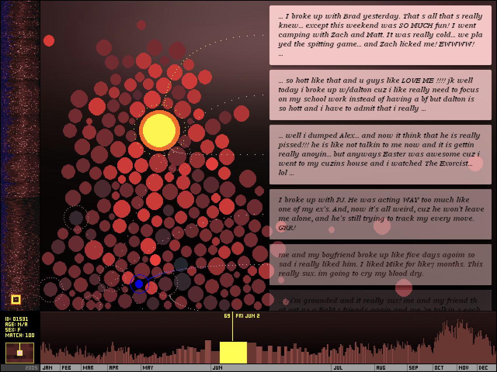
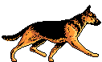
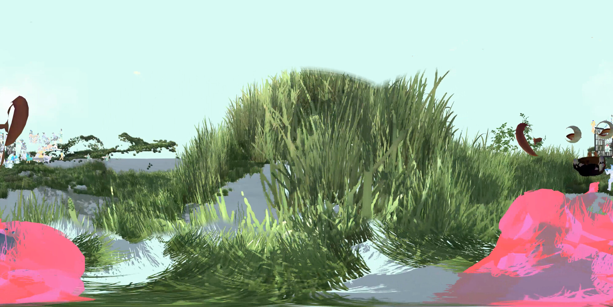

- Interactivity and Participation
- Early internet art required the viewer to become a participant, often transforming passive browsing into active engagement. Works were rarely static; they were designed to be clicked, manipulated, or altered by the user, making the audience a part of the creative process.
- Immateriality and Virtual Existence
- Unlike traditional art, early internet art often existed only in the digital realm, defying physicality and traditional gallery structures. It lived as code on servers, HTML, and browser windows, emphasizing a "non-object" or ephemeral quality.
- Use of "Web 1.0" Aesthetics and Code
- Artists often used the raw tools of the early internet—basic HTML code, browser frames, glitch aesthetics, and early graphic user interfaces—as their medium. Examples include the chaotic, anti-aesthetic, and deconstructive work of collective JODI, which treated code and error messages as art.
- Subversion of Institutions and Commercialism
- Early internet art often held a "utopian," democratic ethos, aiming to bypass traditional art galleries, museums, and market structures. It was often created by enthusiasts and artists operating outside conventional commercial art systems.
- Networkability and Connectivity
- The art was often distributed and social, relying on email lists, web browsers, and hyperlinks to create a "networked" experience. This enabled global reach and fostered collaboration, as seen in projects shared across distributed, international communities.
Early web artists
| Web artist | Description of work | Linked thumbnail |
|---|---|---|
| Andy Deck | The artwork of screening circle is more of an interactive experience that invites the user to change any art work that was previously made by someone else. It fosters the sense of community and collective creative spirit. |  |
| Golan Levin,
Jonathan Feinberg, Kamal Nigam |
The function of the site is for others to view break ups in 2005 which are written in a variety of ways. Some go far into detail more than others and others are as simple as a sentance. Its always a surprise in what you will read. |  |
| Wolfgang Staehle | It is a two page experience thats rather abstract. It is home to gifs both animated and taken from real life on a loop in the a blank and white void. |  |
| Addie Wagenknecht | The art peice named "Asymmetric Love Number 2" is of a ring of cameras facing outward with wires like a chandelier made of CCTV cameras, the ones shaped like rectanglar prisms. |  |
| Rachel Rossin | The artist composed a digital artwork that has very loose and vivid imagery of what seems to be a dreamlike state of the world |  |